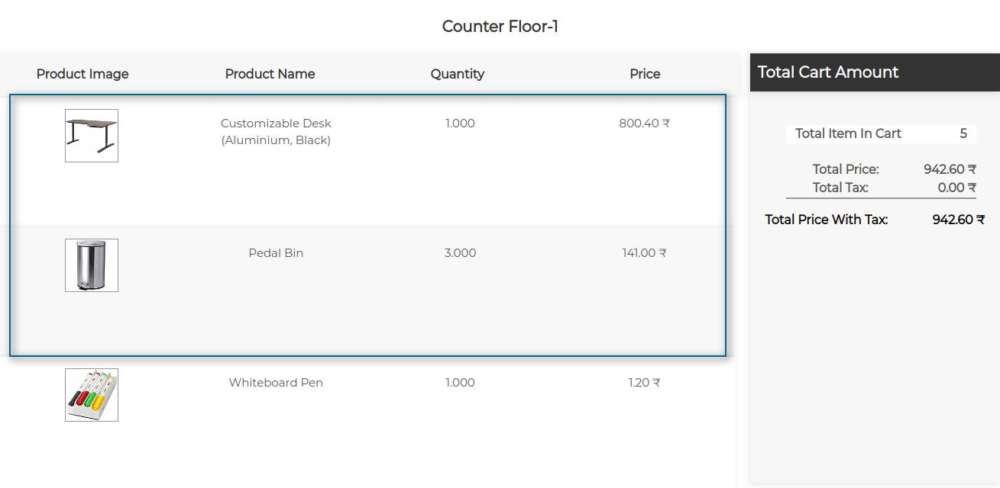
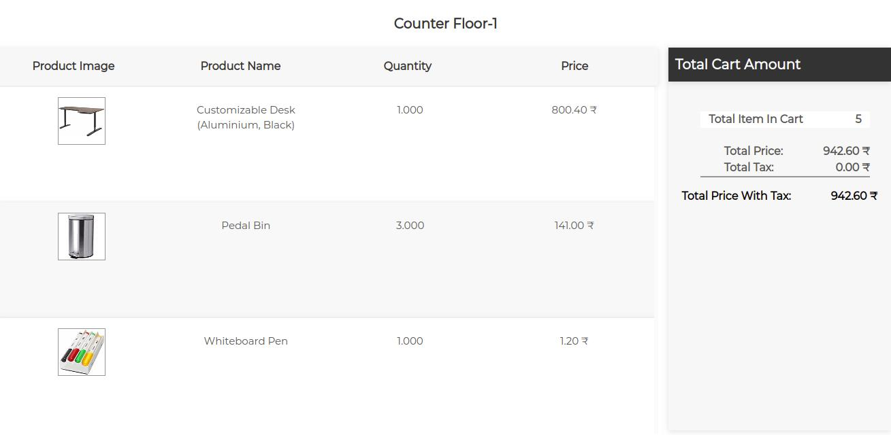
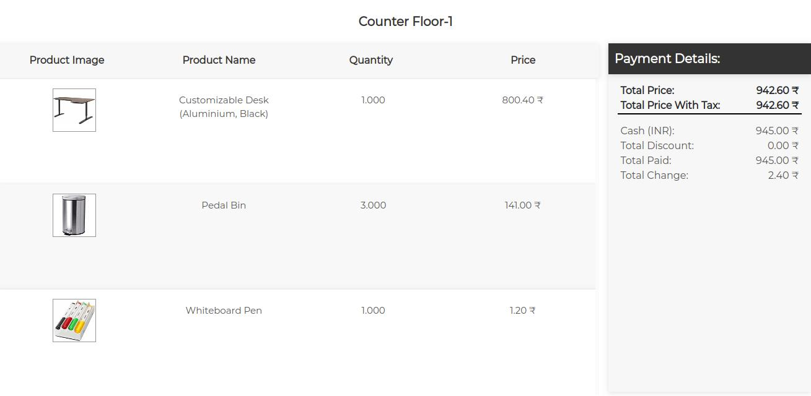
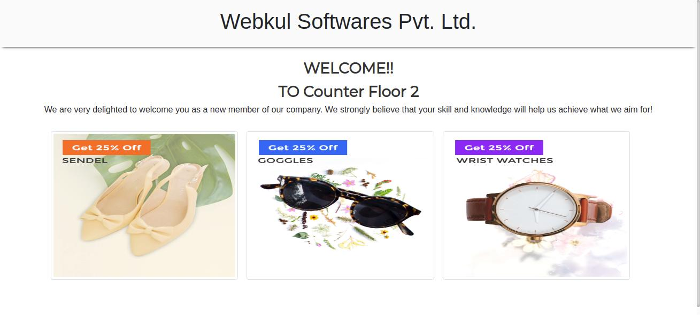

POS Customer Cart Screen

Add a Customer-Facing Display Showing Odoo POS Cart To Customer
The POS Customer Cart Screen show the Odoo POS Cart to the Customer using a secondary display.
The customers can see their cart and its added product and total amount directly from the POS Cart Screen.
Each POS Shop can have its own POS Customer Screen.
The Customer Cart Screen of each POS Shop is independent from each other.
Configure How to Show POS Cart To The Customer On POS Customer Screen
Choose from configuration whether;
To update the POS Customer Cart Screen as you add products to it.
OR,
To Update the screen manually on click of a button by the POS user.
Works With Or Without POSBox
No Need to physically Connect the secondary (additional) screen to your POSBox.
The module generates a unique custom url for every POS shop.
Use this url on any browser to show the POS Customer Cart Screen of that POS shop on the monitor.
Launch Multiple Duplicate Screens using the same URL on multiple Display.
Configure the Odoo POS Customer Screen Separately For Each POS Shop
Create Unique Configuration settings for Each POS Customer Screen For Each POS Shop.
One POS Customer Screen configuration per POS Shop can be Created at a time.
Combine Customer Cart Screen With Review Screen
Use POS Customer Review Screen Module along with POS Customer Cart Screen on the same display to get the best of both worlds.
Automatically Launch the Feedback Screen after the POS Cart Screen on POS Customer Display once you process the POS Order.
Swiftly process the POS orders and take Customer Feedback at the same Time.
Launch multiple duplicate Screens of the same POS Customer Screen using the same Custom URL.
Detailed Features
Adds secondary customer-Facing Screen to Odoo POS
- Show Odoo POS Cart on a secondary Odoo POS Customer Display.
- Use Custom Generated Display To show POS cart on any screen.
Show Order Details on the POS Customer Cart Screen
- The Odoo POS Cart Screen Show Order Details to the Customer.
- Shows details like products added to the cart, Total Cart amount, total amount paid, etc.
Launch the Odoo POS Cart Screen With a URL
- No Physical Connection or POSBox is required to launch the secondary screen.
- Use the custom created URl to launch the POS Customer Screen on any display monitor.
Separate Independent Cart Screen For Each POS Shop
- A unique URL is created for each Odoo POS Shop.
- Thus, a separate Odoo POS Customer screen can be launched for each POS Shop.
- Each POS Shop screen is independent from each other.
Create Separate Configuration for Each POS Shop
- Customize the POS Customer Screen with backend configuration.
- Each POS Shop can have different configuration for its secondary screen.
- However, one configuration per POS Shop can be created in backend.
Show Same Cart Screen on Multiple Displays
- Show the POS Cart Screen of same POS Shop on multiple display devices.
- Use the custom url to show the same screen on any number of displays.
- These displays of the same POS Cart screen are not independent of each other.
Use Odoo POS Customer Display For Quick Order Confirmation
Display the Odoo POS cart directly to the customer using a secondary Display.
{kind=link}
Show POS Cart details to the customer.
Let the customer see the products added to his cart in real time.
{kind=link}
Once the order is validated the POS screen show the order details such as;
Total order amount, total paid, total discount, etc.
{kind=link}
Launch the POS Customer Display Directly from the backend.
{kind=link}
Customize the Odoo POS Launch Screen
Customize the Welcome Screen for Odoo POS Customer Display.
Edit displayed text, promotional images and Greetings!!!
{kind=link}
Get immediate support for any of your query

If you have any query or facing any problem regarding this or any app then please create ticket for it.